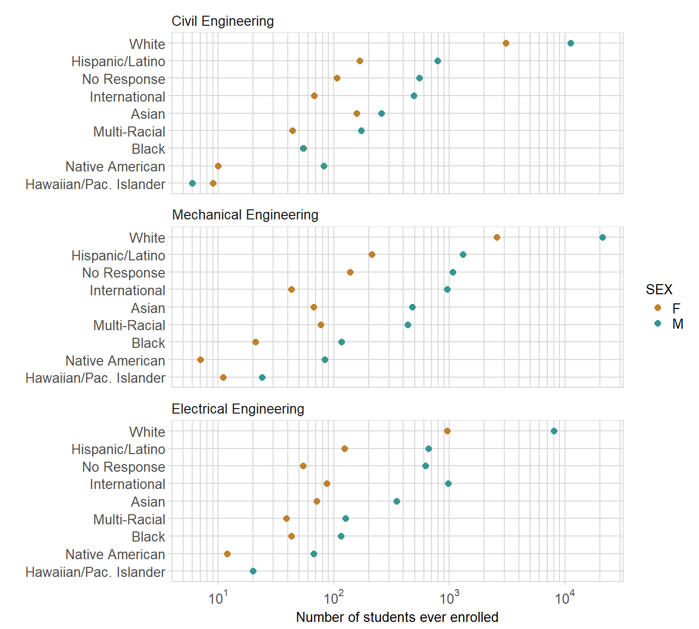

Getting started
“Stickiness” is a longitudinal persistence metric that tracks all students who contact an instructional program to determine what percentage “stick” to that program and graduate in it. Stickiness is defined as the ratio of the number of students graduating in a program to the number of students ever enrolled in the program.1
In this article, we show you how to use midfieldr functions to compute program stickiness. Our workflow is:
- select the programs
- count the students ever enrolled
- count the students graduating
- compute stickiness
- graph stickiness
Because our research focuses on intersectionality, we typically disaggregate the data by program, sex, and race/ethnicity.2 You may of course choose your own combination of variables to study.
Select the programs
For this example, we compare the stickiness of three engineering programs: Civil, Electrical, and Mechanical. Their 4-digit CIP codes were found by keyword search as illustrated in Selecting CIP codes.
We use:
-
cip_filter()to obtain the relevant program codes.
-
add_column()(a tibble function) to add thePGRMvariable to the data frame: a custom program label we use later for grouping, counting, and graphing.
# obtain 2, 4, and 6-digit CIP codes and names
library(dplyr)
library(tibble)
library(midfieldr)
cve <- cip_filter("^1408") %>% add_column(PGRM = "Civil Engineering")
ele <- cip_filter("^1410") %>% add_column(PGRM = "Electrical Engineering")
mce <- cip_filter("^1419") %>% add_column(PGRM = "Mechanical Engineering")Assigning a custom label to PGRM is useful when the set of CIP codes we plan to group and count do not already have a common CIP name. For example, there is no CIP name for the general group of programs called Humanities.
Selecting the values of PGRM is important when using collections not specifically identified as groups in the CIP dataset, e.g., Humanities, Physical Sciences, and the collections provided in the midfieldr named_series.
Next we bind the individual program data frames into one data frame. We use two dplyr functions:
-
bind_rows()to bind the programs into one data frame () -
select()to keep two variables:CIP6for finding the desired student records andPGRMfor grouping.
Examine the result: there are 11 CIP codes for these three programs.
# examine the result
programs
#> CIP6 PGRM
#> 1 140801 Civil Engineering
#> 2 140802 Civil Engineering
#> 3 140803 Civil Engineering
#> 4 140804 Civil Engineering
#> 5 140805 Civil Engineering
#> 6 140899 Civil Engineering
#> 7 141001 Electrical Engineering
#> 8 141003 Electrical Engineering
#> 9 141004 Electrical Engineering
#> 10 141099 Electrical Engineering
#> 11 141901 Mechanical EngineeringCount students ever enrolled
A student contributes to a program’s “ever enrolled” total if the program’s CIP code appears in the student’s midfieldterms data. A student is counted once per program.
To gather the students ever enrolled, we use:
- the midfieldr
midfieldtermsdata for term-by-term program information. - the midfieldr
midfieldstudentsdata for student race/ethnicity and sex. -
gather_ever()to gather students ever enrolled inprogramsand to add their race/ethnicity and sex to the data frame.
# examine midfieldstudents
df <- midfieldstudents
# gather students ever enrolled in the programs
library(midfieldstudents)
library(midfieldterms)
library(DescTools)
# ever <- gather_ever(midfieldterms, programs)
library(stringr)
# select variables such that we end up with one unique observation per student
ever <- midfieldterms %>%
select(ID, program) %>%
unique()
glimpse(ever)
# collapse the programs CIP6 vector to a search string
# filter `ever` for the desired programs
series <- stringr::str_c(programs$CIP6, collapse = "|")
ever <- ever %>%
dplyr::filter(str_detect(program, series)) %>%
unique() %>%
arrange(ID)
glimpse(ever)
Desc(ever)
str_length(ever$ID[[1]])
# Join the program labels to ever
programs <- programs %>%
rename(program = CIP6)
ever <- left_join(ever, programs, by = "program") %>%
dplyr::arrange(program) %>%
rename(program_label = PGRM)
glimpse(ever)df <- ever
# select the three variables we need from the student dataset
studentID_sex_race <- midfieldstudents %>%
select(ID, sex, race)
#> Error in eval(lhs, parent, parent): object 'midfieldstudents' not found
studentID_sex_race <- unique(studentID_sex_race)
#> Error in unique(studentID_sex_race): object 'studentID_sex_race' not found
library(DescTools)
Desc(studentID_sex_race)
#> Error in Desc(studentID_sex_race): object 'studentID_sex_race' not found
glimpse(studentID_sex_race)
#> Error in glimpse(studentID_sex_race): object 'studentID_sex_race' not found
# # use semi_join to return all rows from the students data frame
# # with matching IDs in the ever data farme
# studentID_sex_race <- semi_join(studentID_sex_race, df, by = "ID") %>%
# unique()
#
# glimpse(studentID_sex_race)
# library(DescTools)
# Desc(studentID_sex_race)
# join to the data frame
df <- left_join(df, studentID_sex_race, by = "ID")
#> Error: `by` can't contain join column `ID` which is missing from LHS
# Join the sex and ethnicity/race demographics from the `student` dataset to the `ever` data frame.
# ever <- join_demographics(ever)
ever <- df
Desc(ever)
#> -------------------------------------------------------------------------
#> Describe ever (tbl_df, tbl, data.frame):
#>
#> data.frame: 58306 obs. of 10 variables
#>
#> Nr ColName Class NAs Levels
#> 1 MID numeric .
#> 2 BEGINYEAR numeric 58306 (100.0%)
#> 3 TYEAR numeric .
#> 4 TTERM character .
#> 5 INSTITUTION character .
#> 6 TCIPN character .
#> 7 CIP6 character .
#> 8 PGRM character .
#> 9 ETHNIC character .
#> 10 SEX character .
#>
#>
#> -------------------------------------------------------------------------
#> 1 - MID (numeric)
#>
#> length n NAs unique
#> 58'306 58'306 0 10'006
#> 100.0% 0.0%
#>
#> .05 .10 .25 median
#> 820'452'781.00 820'782'803.00 821'879'633.00 823'666'155.50
#>
#> range sd vcoef mad
#> 10'825'178.00 3'347'412.02 0.00 3'396'260.76
#>
#> 0s mean meanCI
#> 0 824'655'309.12 824'628'137.86
#> 0.0% 824'682'480.37
#>
#> .75 .90 .95
#> 828'106'238.00 829'807'427.00 830'226'097.00
#>
#> IQR skew kurt
#> 6'226'605.00 0.48 -1.22
#>
#> lowest : 820'101'136.0, 820'102'025.0 (5), 820'102'571.0 (9), 820'102'802.0 (12), 820'103'019.0 (2)
#> highest: 830'891'531.0 (3), 830'895'353.0 (2), 830'913'294.0, 830'918'782.0 (3), 830'926'314.0 (3)
#> Warning in n * h: NAs produced by integer overflow
#> Warning in PlotFdist(x = x$x, main = main, args.hist = args.hist, ...):
#> NaNs produced
#> Error in if (abs(n) > 2) {: missing value where TRUE/FALSE needed
#> Error in library(midfieldstudent): there is no package called 'midfieldstudent'
#> Error in library(midfieldterm): there is no package called 'midfieldterm'To examine the result of the operation, use glimpse(), a tibble function.
# examine the result
glimpse(ever)
#> Observations: 58,306
#> Variables: 10
#> $ MID <dbl> 820102025, 820102025, 820102025, 820102025, 820102...
#> $ BEGINYEAR <dbl> NA, NA, NA, NA, NA, NA, NA, NA, NA, NA, NA, NA, NA...
#> $ TYEAR <dbl> 2004, 2003, 2004, 2004, 2005, 1990, 1991, 1991, 19...
#> $ TTERM <chr> "SP", "FA", "FA", "SM", "SP", "FA", "SP", "FA", "S...
#> $ INSTITUTION <chr> "Institution 1", "Institution 1", "Institution 1",...
#> $ TCIPN <chr> "TCIP", "TCIP", "TCIP", "TCIP", "TCIP", "TCIP", "T...
#> $ CIP6 <chr> "140801", "140801", "140801", "140801", "140801", ...
#> $ PGRM <chr> "Civil Engineering", "Civil Engineering", "Civil E...
#> $ ETHNIC <chr> "No Response", "No Response", "No Response", "No R...
#> $ SEX <chr> "M", "M", "M", "M", "M", "M", "M", "M", "M", "M", ...At this point, one decides how to group the the students for counting. In our example, we group by race/ethnicity, sex, and program. We use the following dplyr functions:
-
count()to group and count the students by program, ethnicity/race, and sex. The count is assigned to the default variablen. -
rename()to renamentoEVERfor the number of students in this group ever enrolled in the program. -
arrange()to arrange the rows of the resulting data frame in order of descending magnitude of the count.
# count ever enrolled by grouping variables
ever_count <- count(ever, PGRM, ETHNIC, SEX) %>%
rename(EVER = n) %>%
arrange(desc(EVER))
# examine the result
ever_count
#> # A tibble: 53 x 4
#> PGRM ETHNIC SEX EVER
#> <chr> <chr> <chr> <int>
#> 1 Mechanical Engineering White M 21092
#> 2 Civil Engineering White M 11146
#> 3 Electrical Engineering White M 8029
#> 4 Civil Engineering White F 3080
#> 5 Mechanical Engineering White F 2573
#> 6 Mechanical Engineering Hispanic/Latino M 1302
#> 7 Mechanical Engineering No Response M 1071
#> 8 Electrical Engineering International M 974
#> 9 Electrical Engineering White F 961
#> 10 Mechanical Engineering International M 953
#> # ... with 43 more rowsWe can examine our saummarized data using ggplot2.
# multiway graph of ever enrolled numbers
library(ggplot2)
f1 <- ggplot(ever_count, aes(x = EVER, y = reorder(ETHNIC, EVER, median), col = SEX)) +
geom_point(size = 2) +
facet_wrap(~ reorder(PGRM, -EVER, median), ncol = 1) +
labs(x = "Number of students ever enrolled", y = "") To format the graph, we use the following midfieldr graph functions:
-
expon_scale_x_log10()creates exponential powers-of-ten notation and logarithmic grid lines.
-
midfield_theme(), the ggplottheme_minimal()with some revisions. -
rcb()yields a hexadecimal code for specific colors named in themidfieldr::rcb_colorsdataset.
# format with midfieldr graph functions
f1 <- f1 +
scale_color_manual(values = c(rcb("mid_Br"), rcb("mid_BG"))) +
expon_scale_x_log10() +
midfield_theme()
print(f1)
For the rationale underlying the design of this “multiway” graph, see our Multiway data and graphs discussion.
Count students graduating
To gather the students graduating from a program, we use:
-
studentdataset for student race/ethnicity and sex. -
degreedataset for the programs from which students graduate. -
midfieldr::gather_grad()to subsetdegreefor those students graduating fromprogramsand add variablesETHNICandSEX.
glimpse(degree)
#> Error in glimpse(degree): object 'degree' not found
sort(unique(degree$GCIP))
#> Error in unique(degree$GCIP): object 'degree' not found
sort(unique(degree$GCIP2))
#> Error in unique(degree$GCIP2): object 'degree' not found
sort(unique(degree$GCIP3))
#> Error in unique(degree$GCIP3): object 'degree' not foundlibrary(stringr)
# draft of gather_grad()
gather_grad <- function(degree, programs) {
# select only those variables likely to be used for grouping
grad <- degree %>%
dplyr::select(MID, GYEAR, GTERM, INSTITUTION, GCIP, GCIP2, GCIP3)
# keep the earliest term in which a student earns a degree
grad <- grad %>%
arrange(MID, GYEAR, GTERM) %>%
group_by(MID) %>%
filter(row_number(MID) == 1) %>%
ungroup()
# gather all 6-digit codes (GCIP, GCIP2, GCIP3) for multiple degrees
# omit rows with no second or third degree
grad <- grad %>%
tidyr::gather(GCIPN, CIP6, GCIP:GCIP3) %>%
filter(!is.na(GCIPN))
# collapse the programs CIP6 vector to a search string
# then filter grad for the desired programs
series <- stringr::str_c(programs$CIP6, collapse = "|")
grad <- grad %>%
dplyr::filter(str_detect(CIP6, series)) %>%
unique()
# Join the program labels to grad
grad <- left_join(grad, programs, by = "CIP6") %>%
dplyr::arrange(CIP6)
# Join the sex and ethnicity/race demographics from student
grad <- join_demographics(grad)
return(grad)
}grad <- gather_grad(degree, programs)
#> Error in eval(lhs, parent, parent): object 'degree' not found
glimpse(grad)
#> Error in glimpse(grad): object 'grad' not foundlibrary(tidyr)
# count graduates by grouping variables
grad_count <- count(grad, PGRM, ETHNIC, SEX) %>%
rename(GRAD = n) %>%
arrange(desc(GRAD))
#> Error in group_vars(x): object 'grad' not found
# examine the result
grad_count
#> Error in eval(expr, envir, enclos): object 'grad_count' not found
# join ever and grad
stickiness <- left_join(ever_count, grad_count, by = c("PGRM", "ETHNIC", "SEX"))
#> Error in tbl_vars(y): object 'grad_count' not found
# if GRAD is NA, due to join with EVER. Is correctly set to zero
stickiness <- stickiness %>%
replace_na(list(GRAD = 0))
#> Error in eval(lhs, parent, parent): object 'stickiness' not found
# compute stickiness
stickiness <- stickiness %>%
mutate(STICK = round(GRAD / EVER, 2))
#> Error in eval(lhs, parent, parent): object 'stickiness' not found
kable(stickiness)
#> Error in kable(stickiness): object 'stickiness' not found# select only those variables likely to be used for grouping
grad <- degree %>%
dplyr::select(MID, GYEAR, GTERM, INSTITUTION, GCIP, GCIP2, GCIP3)
#> Error in eval(lhs, parent, parent): object 'degree' not found
unique(grad$GCIP2)
#> Error in unique(grad$GCIP2): object 'grad' not found
unique(grad$GCIP3)
#> Error in unique(grad$GCIP3): object 'grad' not found# keep the earliest term in which a student earns a degree
one_degree <- grad %>%
filter(is.na(GCIP2) & is.na(GCIP3)) %>%
arrange(MID, GYEAR, GTERM) %>%
unique() %>%
group_by(MID) %>%
filter(row_number(MID) == 1) %>%
ungroup()
#> Error in eval(lhs, parent, parent): object 'grad' not found
glimpse(one_degree)
#> Error in glimpse(one_degree): object 'one_degree' not found
unique(one_degree$GCIP2)
#> Error in unique(one_degree$GCIP2): object 'one_degree' not found
unique(one_degree$GCIP3)
#> Error in unique(one_degree$GCIP3): object 'one_degree' not foundGather the GCIPs into a single column
one_degree <- one_degree %>%
gather(GCIPN, CIP6, GCIP:GCIP3) %>%
filter(!is.na(CIP6))
#> Error in eval(lhs, parent, parent): object 'one_degree' not found
glimpse(one_degree)
#> Error in glimpse(one_degree): object 'one_degree' not foundNow count
Matthew Ohland, Marisa Orr, Richard Layton, Susan Lord and Russell Long (2012) Introducing “stickiness” as a versatile metric of engineering persistence, in proc. 2012 Frontiers in Education Conference, Seattle, WA, pp. 1–5. DOI 10.1109/FIE.2012.6462214.↩
The possible values of race/ethnicity and sex categories are limited to those used by the participating US institutions. Thus sex is limited to the set (F, M) and race/ethnicity is limited to the set (Asian, Black, Hawaiian/Pac. Islander, Hispanic/Latino, International, Multi-Racial, Native American, No Response, White).↩